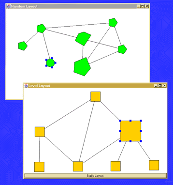

This simple demo shows the diva graph package in action. It's not meant to be flashy, but to illustrate the basic functionality of the package, and hopefully illuminate the package architecture a bit. It consists of three parts, incremental programmatic construction of a simple graph, user editing of the graph, and finally automatic layout of the graph using a simple algorithm.
There are two windows. They are used to illustrate the elegance of the model-view separation. Adding a node in one automatically generates a node in the other. It is also easy to customize the look of the nodes--take a look at the source of the demo for more on this.
The graph initialization is done without any knowledge of the graph's display. This how we envision typical applications will interact with the package; all user interface code (even application-specific code), will be disconnected from the application's core data structure and basic semantics. Basic graph algorithms and other graph operations operate on the graph data structure, and side-effects changes to the view indirectly.
The layout algorithm used here is described in more detail below, but basically levelizes the graph and places it based on the levels. It is a static algorithm used incrementally, so with every graph modification the layout algorithm is executed from scratch. We hope to write a series of incremental algorithms in the near future.
The user editing in this demo is very rudimentary (and is actually implemented in a very crude way which will definitely be replaced before the first real release). The graph editor contains three operations, all using the LEFT mouse button.
When a node or edge is added to the graph, the following set of events occur. Here we walk through the creation of an edge (the addition of a node is a nearly symmetric operation, but slightly more simple). On completion of the user operation (the edge drag), an edge is added to the graph model, which in turn side-effects an event to be delivered to all model listeners. The editor that created the edge already has a view of the edge, so it does nothing. Any other views on the graph render the edge in whatever way is appropriate to that view, and then update their layout.
There are two layouts shown here. The first layout is a level-based layout, based on an algorithm by Ulfar Erlingsson at Cornell. It has a bug which causes it to fail in certain situations. It has something to do with the algorithm leaving extra nodes/edges in the graph once it is finished with the layout. It also doesn't handle cyclic graphs properly. All shortcomings of this algorithm will be remedied in the next release. Please bear with us on this one.
The second layout is random. It is the simplest possible incremental layout, and hopefully there are no bugs in it. Notice that when a new node is added in the DAG window, a new node is added in a random location on the other window, but none of the other nodes work. We hope to add a set of useful incremental layouts in the near future.